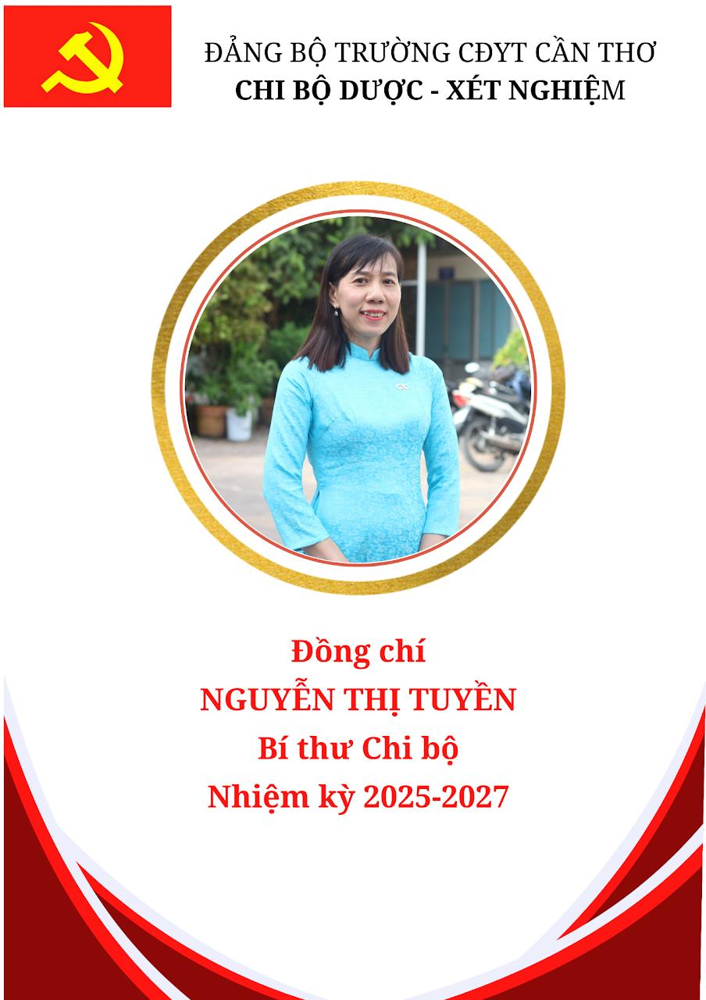
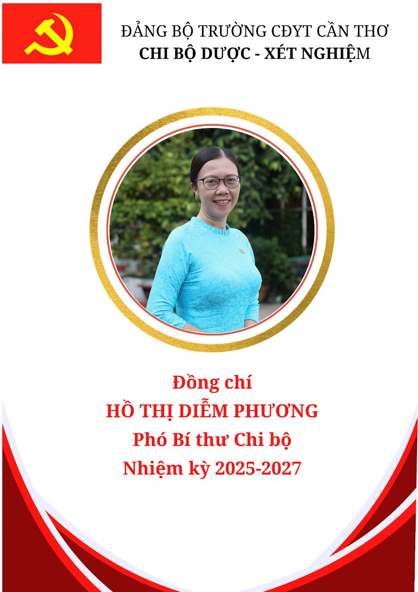
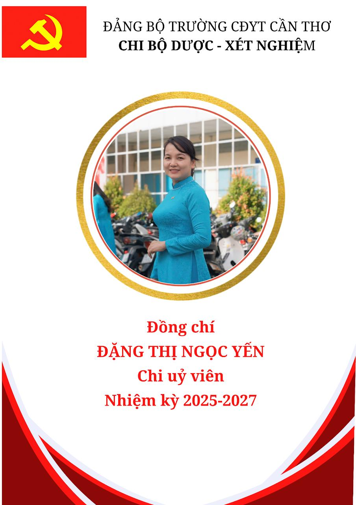
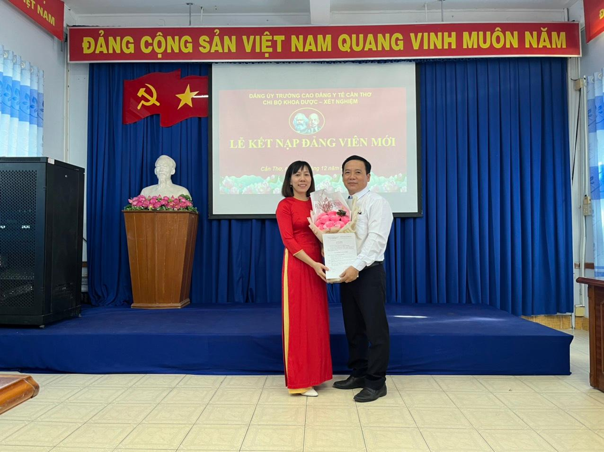
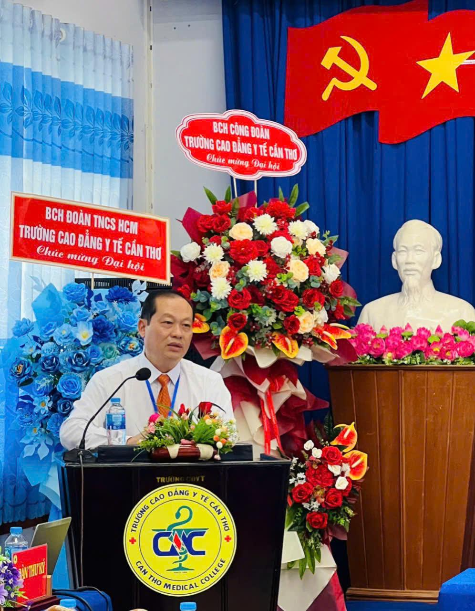
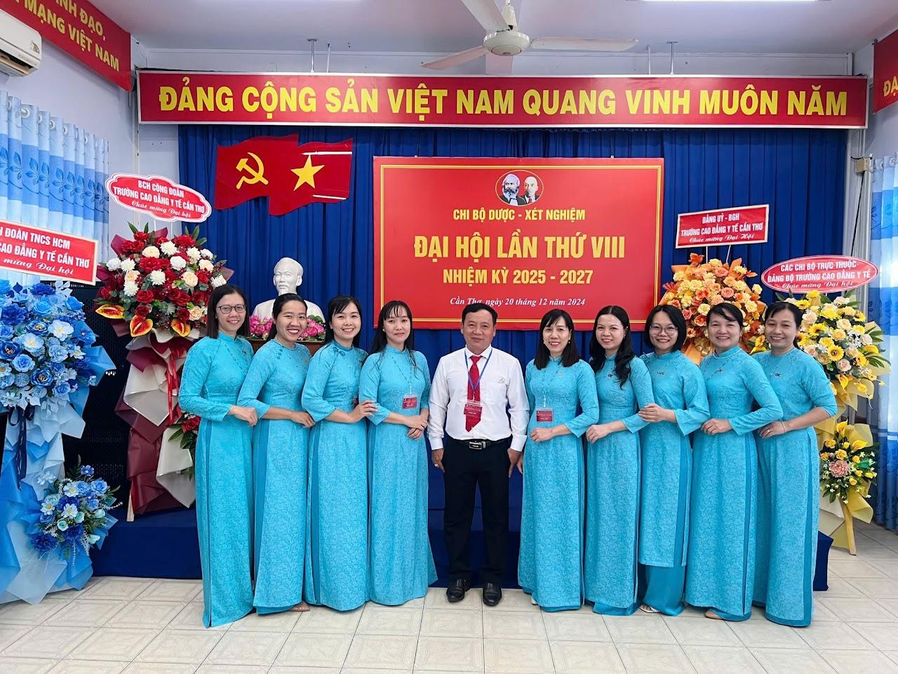
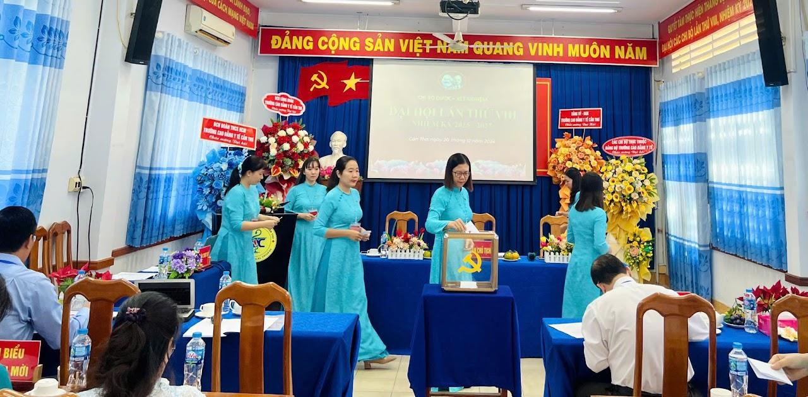
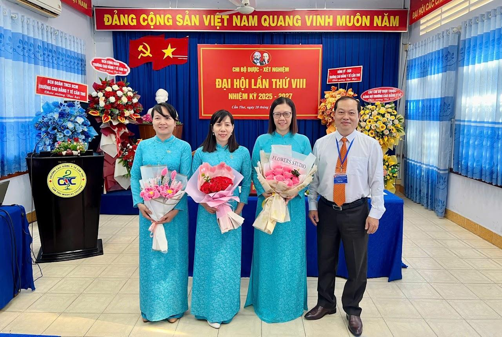
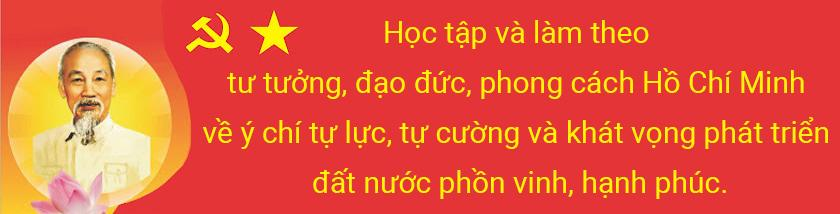

GIỚI THIỆU CHI BỘ KHOA DƯỢC - XÉT NGHIỆM
Chi bộ Dược - Xét nghiệm là chi bộ trực thuộc Đảng bộ Trường Cao đẳng Y tế Cần Thơ. Trong quá trình hoạt động, Chi bộ khoa luôn thể hiện vai trò là hạt nhân chính trị ở cơ sở, lãnh đạo thực hiện các nhiệm vụ chính trị của đơn vị…
LÃNH ĐẠO CHI BỘ



HOẠT ĐỘNG CHI BỘ




Chi bộ Dược - Xét nghiệm luôn bảo đảm vai trò lãnh đạo, chỉ đạo tập trung, thống nhất của Đảng; nhằm huy động sức mạnh tổng hợp của tập thể; tham gia thực hiện công tác bảo vệ nền tảng tư tưởng của Đảng; kiên quyết đấu tranh chống lại những quan điểm sai trái một cách chủ động, thiết thực, hiệu quả…
ĐẠI HỘI CHI BỘ DƯỢC - XÉT NGHIỆM LẦN THỨ VIII, NHIỆM KỲ 2025 - 2027
Thực hiện Hướng dẫn số 06-HD/ĐUK ngày 26/9/2024 của Ban Thường vụ Đảng ủy Khối cơ quan Dân Chính Đảng; Kế hoạch số 117-KH/ĐUT ngày 24/10/2024 của Đảng ủy Trường Cao đẳng Y tế Cần Thơ về việc tổ chức đại hội Chi bộ trực thuộc đảng ủy cơ sở nhiệm kỳ 2025 - 2027. Ngày 20/12/2024, Chi bộ Dược - Xét nghiệm đã tiến hành Đại hội Chi bộ nhiệm kỳ 2025 - 2027. Đến dự và phát biểu chỉ đạo Đại hội có đồng chí Nguyễn Quang Thông - Bí thư Đảng ủy, Hiệu trưởng Trường Cao đẳng Y tế Cần Thơ; đại diện Cấp ủy của 06 Chi bộ trực thuộc Đảng ủy Trường, cùng 10/10 đảng viên Chi bộ Dược - Xét nghiệm.

Đ/c Nguyễn Quang Thông - Bí thư Đảng ủy,
Hiệu trưởng Trường CĐYT Cần Thơ phát biểu chỉ đạo đại hội
Theo báo cáo chính trị, trong nhiệm kỳ qua Chi bộ Dược - Xét nghiệm đã phát huy trí tuệ, đoàn kết để khắc phục khó khăn, góp phần hoàn thành xuất sắc các nhiệm vụ và chỉ tiêu mà Nghị quyết Đại hội nhiệm kỳ 2022 - 2025 đã đề ra. Mỗi Đảng viên đều nêu cao tinh thần trách nhiệm, là nòng cốt, tích cực tham gia ý kiến góp ý trong công tác xây dựng Đảng, thực hiện nhiệm vụ chính trị, các phong trào thi đua do cơ quan, đơn vị phát động. Việc xây dựng Nghị quyết hàng tháng của Chi bộ có trọng tâm, trọng điểm, sát, đúng với tình hình thực tiển, có phân công cụ thể, rõ ràng trách nhiệm của từng đồng chí Cấp ủy, Đảng viên.
Việc triển khai thực hiện Nghị quyết của Chi bộ được sự thống nhất cao trong nội bộ nên đã hoàn thành tốt nhiệm vụ chính trị, chuyên môn, góp phần hoàn thành nhiệm chung của Khoa, Nhà trường. Các chủ trương, nghị quyết của Đảng và các quy định của Nhà nước đều được triển khai đầy đủ, kịp thời đến từng Đảng viên, quần chúng để tổ chức thực hiện có hiệu quả cao. Đặc biệt, trong sinh hoạt Chi bộ luôn có sự đổi mới có trọng tâm, trọng điểm nhưng vẫn thực hiện đúng quy định; nội dung sinh hoạt thiết thực, bám sát Nghị quyết của Đảng ủy và nhiệm vụ chính trị cơ quan, tập trung công tác xây dựng Đảng gắn với học tập và làm theo tư tưởng, đạo đức, phong cách Hồ Chí Minh. Công tác kiểm tra, giám sát được thực hiện thường xuyên, theo đúng kế hoạch đã đề ra, qua đó kịp thời chấn chỉnh khi phát hiện những dấu hiệu thiếu sót, góp phần tích cực trong công tác xây dựng Chi bộ trong sạch vững mạnh.

Tập thể Chi bộ Dược - Xét nghiệm
Với tinh thần đoàn kết, trí tuệ, năng động, hiệu quả Đại hội biểu quyết với tỷ lệ 100% thống nhất thông qua Dự thảo Báo cáo tổng kết nhiệm kỳ 2022 - 2025, phương hướng nhiệm vụ nhiệm kỳ 2025 - 2027. Báo cáo kiểm điểm vai trò lãnh đạo, điều hành của Bí thư, Phó bí thư Chi bộ nhiệm kỳ 2022 - 2025.

Tiến hành bầu cử Chi ủy nhiệm kỳ 2025-2027
Về nhân sự Đại hội, đại biểu đã giới thiệu, tín nhiệm 100% bầu đồng chí Nguyễn Thị Tuyền giữ chức vụ Bí thư Chi bộ, đồng chí Hồ Thị Diễm Phương giữ chức vụ Phó bí thư Chi bộ và đồng chí Đặng Thị Ngọc Yến giữ chức vụ Chi ủy viên.

Đại hội Chi bộ Dược-Xét nghiệm, nhiệm kỳ 2025-2027 đã bầu 03 đồng chí vào Chi ủy khóa mới.
Chi ủy khóa mới ra mắt, nhận nhiệm vụ
Thay mặt Đảng ủy, đồng chí Nguyễn Quang Thông - Bí thư Đảng ủy, Hiệu trưởng trường CĐYT Cần Thơ chúc mừng các kết quả mà Chi bộ đạt được trong nhiệm kỳ 2022 - 2025, chúc mừng các đồng chí vừa trúng cử vào Cấp ủy khóa mới.
